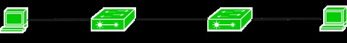
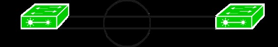

EtherChannel is a port link aggregation technology in which multiple physical port links are grouped into one logical link. It is used to provide high speed links and redundancy. Maximum of 8 links can be aggregated to form a single logical link.
Need of EtherChannel –

Here is a topology in which two switches are connected with one PC each. The link between the switches and PC is 1000mb/s and the link between the switches is of 100mb/s.
Now, suppose if you want to send a traffic of more than 100mb/s then we have a congestion as the link between the switches is of 100mb/s only and packets will be start dropping. Now, to solve this problem, we should have a high speed link between the switches. To achieve this, We can simply replace the current link with a high speed link or we can bundle up more than one link of same speed of 100mb/s. By forming an EtherChannel, you can bundle up more than one link into a single logical link.
But, as you connect the switches with more than one link, STP (Spanning Tree Protocol) will block the least redundant link. As we have made an EtherChannel, all the links (that are grouped as one logical link k) will be treated as single logical link therefore no link will be blocked and also, it will provide us high speed link and redundancy in our network.
Criteria – To form an EtherChannel, all ports should have:
- Same duplex
- Same speed
- Same VLAN configuration (i.e., native VLAN and allowed VLAN should be same)
- Switch port modes should be same (access or trunk mode)
EtherChannel protocols – To form an EtherChannel, there are 2 protocols, port aggregation protocol (PAgP) and link aggregation control protocol (LACP).
1. Port Aggregation Protocol (PAgP) –
Port Aggregation Protocol is a Cisco proprietary protocol used to form an EtherChannel. There are different modes in which you can configure your interface. These are namely:
- ON: In this mode, the interface will be a part of EtherChannel but no negotiation takes place.
- Desirable: In this mode, the interface will continuously attempt to convert other side interface into an EtherChannel.
- Auto: In this mode, the interface will become a part of EtherChannel if and only of it is requested by the opposite interface.
- Off: No EtherChannel configured on the interface.
Configuration –

There is a small topology in which 2 switches S1 and S2 are connected with each other and we have to bundle these two links into a single logical link.
S1(config)# interface fa0/1 S1(config-if)# channel-group 1 mode desirable S1(config)# interface fa0/2 S1(config-if)# channel-group 1 mode desirable S1(config)# interface port-channel 1 S1(config-if)# switchport trunk encapsulation dot1q S1(config-if)# switchport mode trunk
Here, user has used the mode desirable and switchport mode trunk. The modes should be same on both switches therefore user will configure this on other switch also.
Now, configuring on switch S2:
S2(config)# interface fa0/1 S2(config-if)# channel-group 1 mode desirable S2(config)# interface fa0/1 S2(config-if)# channel-group 1 mode desirable S2(config)# interface port-channel 1 S2(config-if)# switchport trunk encapsulation dot1q S2(config-if)# switchport mode trunk
2. Link Aggregation Control Protocol (LACP) –
Link Aggregation Control Protocol is an IEEE protocol, originally defined in 802.3ad, used to form an EtherChannel. This protocol is almost similar to Cisco PAgP. There are different modes in which you can configure your interface. These are namely:
- ON: In this mode, the interface will be a part of EtherChannel but no negotiation takes place
- Active: In this mode, the interface will continuously attempt to convert other side interface into an EtherChannel.
- Passive: In this mode, the interface will become a part of EtherChannel if and only of it is requested by the opposite interface.
- Off: No EtherChannel configured on the interface.
Configuration –
Taking the same topology, you will now configure LACP on both switches. First, configuring for S1:
S1(config)# interface fa0/1 S1(config-if)# channel-group mode active S1(config)# interface fa0/2 S1(config-if)# channel-group mode active S1(config)# interface port-channel 1 S1(config-if)# switchport trunk encapsulation dot1q S1(config-if)# switchport mode trunk
Now, configuring for S2:
S2(config)# interface fa0/1 S2(config-if)# channel-group mode active S2(config)# interface fa0/2 S2(config-if)# channel-group mode active S2(config)# interface port-channel 1 S2(config-if)# switchport trunk encapsulation dot1q S2(config-if)# switchport mode trunk